第三节 数据库的使用
作者环境：
AuthMe配置MySQL
Windows10 1809 64-bit
Minecraft服务器核心：spigot-1.8.8-R0.1-SNAPSHOT-latest
服务器插件：AuthMe-5.4.0
MySQL安装
Windows Server 2019 数据中心版 64位简体中文
目录
本节主要分为三部分：
数据库的基本介绍
什么是数据库
数据库是“按照数据结构来组织、存储和管理数据的仓库”。是一个长期存储在计算机内的、有组织 的、有共享的、统一管理的数据集合。
数据库是以一定方式储存在一起、能与多个用户共享、具有尽可能小的冗余度、与应用程序彼此独立的数据集合，可视为电子化的文件柜——存储电子文件的处所，用户可以对文件中的数据进行新增、查询、更新、删除等操作。
用字面意思解释就是存放数据的库。
数据库的两种分类
早期比较流行的数据库模型有三种，分别为层次式数据库、网络式数据库和关系型数据库。而在当今的互联网中，最常用的数据库模型主要是两种，即关系型数据库和非关系型数据库。
关系型数据库
关系型数据库最典型的数据结构是表，由二维表及其之间的联系所组成的一个数据组织
优点：
- 易于维护：都是使用表结构，格式一致；
- 使用方便：SQL语言通用，可用于复杂查询；
- 复杂操作：支持SQL，可用于一个表以及多个表之间非常复杂的查询。
缺点：
- 固定的表结构，灵活度稍欠
- 高并发读写需求，传统关系型数据库来说，硬盘I/O是一个很大的瓶颈
非关系型数据库
非关系型数据库严格上不是一种数据库，应该是一种数据结构化存储方法的集合，可以是文档或者键值对等。
优点：
- 格式灵活：存储数据的格式可以是key,value形式、文档形式、图片形式等等，文档形式、图片形式等等，使用灵活，应用场景广泛，而关系型数据库则只支持基础类型
- 速度快：nosql可以使用硬盘或内存作为载体，而关系型数据库只能使用硬盘
- 高扩展性
缺点：
- 不提供sql支持，学习和使用成本较高；
- 无事务处理；
- 数据结构相对复杂，复杂查询方面稍欠。
非关系型数据库的分类和比较：
- 文档型
- key-value型
- 列式数据库
- 图形数据库
这里我做了一张数据库分类的图

AuthMe配置MySQL
需要先运行一次服务器让AuthMe生成默认的配置文件，如果出现下面这样的字样说明AuthMe成功的加载了
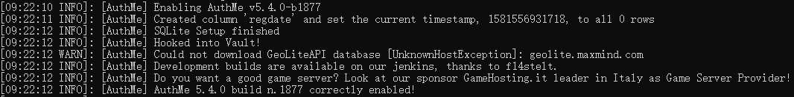
在这之前请确认您的MySQL服务器是否开启，使用MySQL工具能否访问
1.使用MySQL客户端工具，或者直接使用MySQL控制台新建一个数据库(由于Minecraft的MySQL数据库基本是本地使用，所以无需建多个MySQL用户，这里我直接使用root用户来建库)
2.选择一款MySQL客户端工具，这里推荐两款PhpMyAdmin(需要有web环境)、Navicat Premium(Mysql)
因为看本教程的大部分都是萌新，所以我这里使用最简单的Navicat Premium(Mysql)
官方下载地址:
3.打开Navicat Premium(Mysql)点击连接-MySQL，填入自己的服务器信息

连接名自己可以随便填写，如果是使用其他服务器上的MySQL需要使你现在客户端IP拥有你数据库用户的访问权限，如果不会请看下面安装过程。如果是本地的MySQL服务器可以直接使用localhost或者127.0.0.1，默认端口3306

4.当你添加完连接后，双击左侧你的连接名就会连接你的MySQL数据库，就会列出现在连接的用户中拥有的数据库（我这里之前建过一些数据库）

5.右键你的连接名 - 新建数据库 - 随便输入一个数据库名

在这里字符集推荐使用utf8mb4,排列顺序使用utf8mb4_unicode_ci

点击确定之后我们就能在左侧看到我们新建立的数据库了

6.修改Minecraft服务器AuthMe插件配置文件“plugins/AuthMe/config.yml”文件
我们只用得到配置文件的前21行
DataSource:
# 你想使用哪种数据库来储存
# 数据库类型: SQLITE MYSQL
backend: 'SQLITE'
# 是否启用数据库缓存系统，在BungeeCord群服中或者使用网站集成时应禁用。
caching: true
# 数据库地址
mySQLHost: '127.0.0.1'
# 数据库端口
mySQLPort: '3306'
# 是否使用SSL连接数据库
mySQLUseSSL: true
# 数据库用户名
mySQLUsername: 'authme'
# 数据库密码
mySQLPassword: '12345'
# 数据库名
mySQLDatabase: 'authme'
# 数据表名
mySQLTablename: 'authme'
- 首先我们需要把
backend的值改为MYSQL使用MySQL作为存储数据库 - 如果你想开一个群服或者和你的网站或者论坛对接数据请将
caching改为false，如果没有以上两种需求可以不做调整 - 将
mySQLHost修改为你MySQL数据库的地址，如果在本地搭建的不需要做调整 - 将
mySQLPort设置为你MySQL的数据库端口，MySQL默认端口3306 mySQLUseSSL建议使用true值，不做调整mySQLUsername修改为你刚才创建数据库的那个用户名，我这里是"root"mySQLPassword数据库密码，不做解释mySQLDatabase修改为刚才你创建的数据库名，根据我上面图片的设置，这里我应该设置成"minecraft_server_1"，这里仅做为示例，请各位根据实际情况自行修改mySQLTablename存放数据的表名，可自定义修改，也可不做修改示例：
# 你想使用哪种数据库来储存 # 数据库类型: SQLITE MYSQL backend: 'MYSQL' # 是否启用数据库缓存系统，在BungeeCord群服中或者使用网站集成时应禁用。 caching: true # 数据库地址 mySQLHost: '127.0.0.1' # 数据库端口 mySQLPort: '3306' # 是否使用SSL连接数据库 mySQLUseSSL: true # 数据库用户名 mySQLUsername: 'root' # 数据库密码 mySQLPassword: '123456' # 数据库名 mySQLDatabase: 'minecraft_server_1' # 数据表名 mySQLTablename: 'authme'
7.启动Minecraft服务器，AuthMe将自动根据设置自动创建数据表
出现以下字样就说明AuthMe成功使用MySQL作为数据库了
这时使用客户端工具就能看到AuthMe创建的数据表了
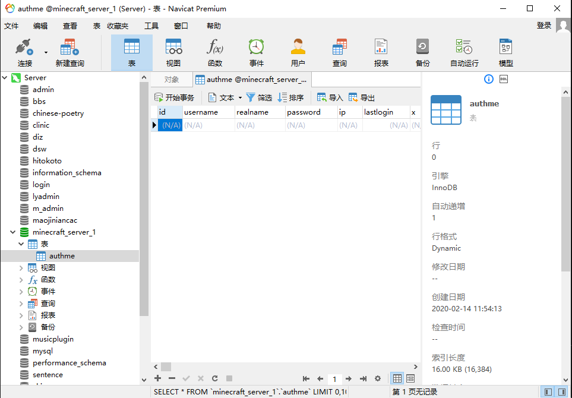
至此，AuthMe使用MySQL作为数据库的配置就到此结束了
MySQL的安装
写在前面
安装版可以直接无脑Next，这里就不讲了，下面是讲解免安装版的安装方法
免安装版第一次配置好，一个文件夹放到哪个服务器或者电脑上都能直接用
当你成功配置一次免安装版后会发现免安装版配置如此简单
后面的MongoDB的安装也是重点讲解免安装版的使用
MySQL5.7的安装与配置
下载
MySQL5.7官方下载地址：
Product Version选择5.7.28Operating System选择Microsoft WindowsOS Version选择Windows (x86, 64-bit)- 点击
ZIP Archive后的Download进行下载
温馨提示：如果使用浏览器下载可以使用IDM等下载工具，如果速度还是非常慢请使用VPN

华为云开源镜像站下载地址：
https://mirrors.huaweicloud.com/mysql/Downloads/MySQL-5.7/mysql-5.7.28-winx64.zip
腾讯云开源镜像站下载地址：
https://mirrors.cloud.tencent.com/mysql/downloads/MySQL-5.7/mysql-5.7.28-winx64.zip
MySQL5.7安装
将下载好的
mysql-5.7.28-winx64.zip解压放在合适的位置（我这里放在了"C:\mysql\5.7.28\"）
配置环境变量
"此电脑"右键 - "属性" - "高级系统设置" - "环境变量"

在下部的"系统变量"中找到
Path选中，点击编辑点击新增将MySQL根目录下的bin目录的位置复制进去（我这里是"C:\mysql\5.7.28\bin"）

如果点击编辑后是下图这种窗口，请添加
;bin目录(需要在前面加一个";"，例：;C:\mysql\5.7.28\bin)
在MySQL根目录新建
my.ini文件，内容如下，注意要修改自己的文件地址[mysqld] # 服务器端口，默认3306 port = 3306 # MySQL根目录(注意这里的都是`/`而不是`\`或者使用`\\`如果填错会刷错误) basedir=C:/mysql/5.7.28 # 数据存储位置 datadir=C:/mysql/5.7.28/data # 最大连接数 max_connections=200 # 服务器默认字符集，无需修改 character-set-server=utf8 # 创建新表时将使用的默认存储引擎 default-storage-engine=INNODB # SQL模式，无需修改 sql_mode=NO_ENGINE_SUBSTITUTION,STRICT_TRANS_TABLES [mysql] default-character-set=utf8使用管理员权限打开DOS窗口(cmd)，也可以使用Powershell，但都需要以管理员权限运行
输入
mysqld --initialize-insecure，会自动生成一个无密码的root用户（可能有人要问了，为什么没密码，不要慌，下面会设置）MySQL会自动在你设置的数据库存储位置生成文件夹及数据如果出现下面这种错误不要慌

下载并安装
Visual C ++ Redistributable Package 2013,官方下载地址： https://www.microsoft.com/zh-CN/download/details.aspx?id=40784 根据自己的系统版本下载对应版本的软件再输入
mysqld --install然后再输入
net start mysql,启动mysql服务；对应的关闭命令为net stop mysql出现启动成功的字样就说明已经安装成功了，也意味着你马上就要成功了！
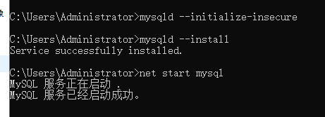
启动成功后输入
mysqladmin -u root password 新密码来修改密码我这里使用了"123456"的弱密码，请各位不要效仿
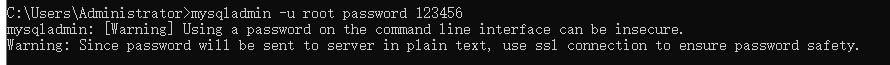
输入
mysql -uroot -p登录root用户，测试你是否成功修改密码，执行该命令后会提示你Enter password输入密码，就可以输入你的新密码登录MySQL了出现下面字符就说明登录成功了

MySQL5.7的卸载
- 使用管理员权限打开DOS窗口(cmd)，也可以使用Powershell
- 输入
net stop mysql停止MySQL的运行 - 输入
mysqld -remove或者sc delete mysql删除MySQL的服务器
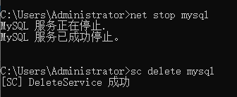
如果卸载后你又想安装上怎么办
- 使用管理员权限打开DOS窗口(cmd)，也可以使用Powershell
- 再输入
mysqld --install安装成功即可 net start mysql启动服务
所以开头我说免安装版以后会非常的方便，只需带着你以前的MySQL文件夹，转到目录中的bin文件夹下执行mysqld --install就能使用，但是前提需要此电脑上已安装Visual C ++ Redistributable Package 2013
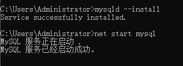
MySQL5.7安装时常见错误总结及解决方法
问题一 ：由于找不到MSVCR120.dll,无法继续执行代码.重新安装程序可能会解决此问题。
原因：缺少运行库
解决方法：上文已经写出了解决此问题的方法，下载并安装Visual C ++ Redistributable Package 2013,官方下载地址： https://www.microsoft.com/zh-CN/download/details.aspx?id=40784根据自己的系统版本下载对应版本的软件
问题二：mysqld: Can't create directory 'D:\mysql\5.7.28\bin\data\' (Errcode: 2 - No such file or directory)
原因：my.ini文件中的basedir（设置mysql的安装目录）、datadir（设置mysql数据库的数据的存放目录）与MySQL解压后的路径不一致
解决方法：调整basedir为MySQL的根目录，设置有效的datadir位置
问题三：设置密码时可能出现错误：ERROR 1045 (28000): Access denied for user 'root'@'localhost' (using password: NO)
解决方法：
打开
my.ini，在[mysqld]下添加一行skip-grant-tables来跳过密码验证注意添加位置

重启MySQL
- 以管理员身份打开DOS窗口(cmd)或者PowerShell
输入依次输入
net stop mysql和net start mysql
输入
mysql -uroot -p按回车，如果提示输入密码，直接回车即可
- 输入
use mysql;切换到名为mysql的数据库下,注意进入MySQL后每个命令后面要加上分号";" - 输入
update mysql.user set authentication_string=password('新密码') where user='root';修改密码，请自行将新密码替换为您想设置的root用户密码 - 输入
flush privileges;刷新保存 exit;或quit;退出mysql
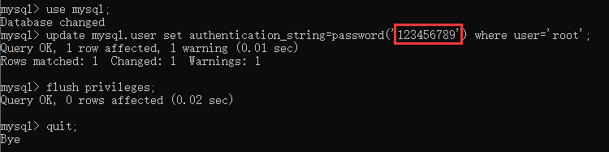
- 删除
my.ini中刚刚添加的skip-grant-tables并保存 - 重复步骤2，重启mysql
- 之后就可以使用新密码登录root用户了
问题四：我服务器上MySQL已经成功安装并运行了，我在自己电脑上为什么连接不了MySQL数据库
当然我这里不建议外网可以访问root用户
原因1：首先你的服务器需要开放你设置的MySQL数据库端口
原因2：root用户未开放远程访问权限
解决方法：
- 打开DOS窗口(cmd)或者PowerShell
- 输入
mysql -uroot -p按回车，输入密码，回车 - 输入
use mysql;切换到名为mysql的数据库下 - 输入
grant all privileges on *.* to 'root'@'%' identified by 'root用户的密码' with grant option;注意替换命令中的root用户的密码为你真实的root密码 - 输入
flush privileges;刷新保存 exit;或quit;退出mysql
注意红圈地方是root用户的密码，请根据自身实际情况修改
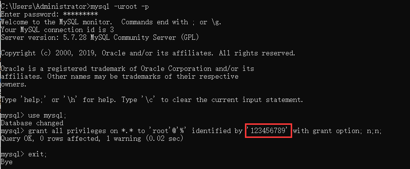
之后你就有权限访问你服务器里的数据库了
MySQL8.0的安装与配置
下载
MySQL8.0官方下载地址：
Select Operating System选择Microsoft Windows- 点击
Windows (x86, 64-bit), ZIP Archive后的Download
温馨提示：如果使用浏览器下载可以使用IDM等下载工具，如果速度还是非常慢请使用VPN
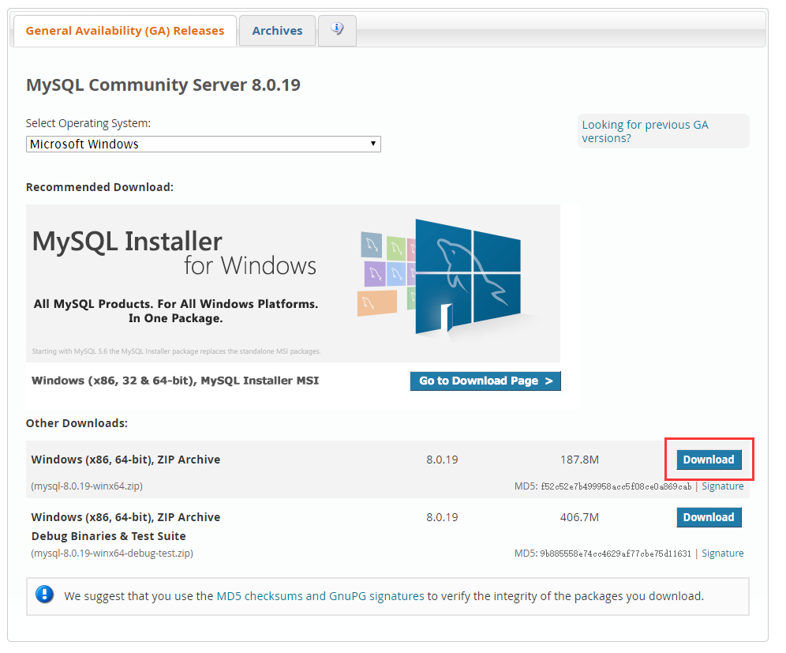
华为云开源镜像站下载地址：
https://mirrors.huaweicloud.com/mysql/Downloads/MySQL-8.0/mysql-8.0.19-winx64.zip
腾讯云开源镜像站下载地址：
https://mirrors.cloud.tencent.com/mysql/downloads/MySQL-8.0/mysql-8.0.19-winx64.zip
MySQL8.0的安装
Mysql8.0的免安装版的配置前2步与5.7的配置方法相同所以在这里就不详细写了，直接从创建my.ini配置文件开始
如果需要看前两步请点我转跳
在MySQL根目录新建
my.ini文件，内容如下，注意要修改自己的文件地址注意：在MySQL 8.0中，默认的身份验证插件已从
mysql_native_password更改为caching_sha2_password，并且'root'@'localhost'默认使用caching_sha2_password。[mysqld] # 服务器端口，默认3306 port=3306 # MySQL根目录(注意这里的都是`/`而不是`\`或者使用`\\`如果填错会刷错误) basedir=C:/mysql/5.7.28 # 数据存储位置 datadir=E:\\software\\mysql\\mysql-8.0.11-winx64\\Data # 允许最大连接数 max_connections=200 # 允许连接失败的次数 max_connect_errors=10 # 服务器默认字符集，无需修改 character-set-server=utf8 # 创建新表时将使用的默认存储引擎 default-storage-engine=INNODB # 默认使用“mysql_native_password”插件认证 default_authentication_plugin=mysql_native_password [mysql] # 设置mysql客户端默认字符集 default-character-set=utf8 [client] # 设置mysql客户端连接服务端时默认使用的端口 port=3306 default-character-set=utf8使用管理员权限打开DOS窗口(cmd)，也可以使用Powershell，但都需要以管理员权限运行
输入
mysqld --initialize --console初始化数据库，执行完后MySQL会生成一个随机的初始root密码类似这样的一个信息（图中红圈圈的就是初始的随机密码）：
qGdy+.pl<7uj这个是我的随机密码，每个人的初始密码都不同（不含首位空格）在没有更改密码前，需要记住这个密码，后续登录需要用到。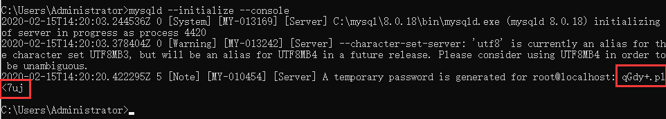
如果你忘记了初始密码或者手贱直接关掉了，请删掉你在
my.ini中datadir（数据存储位置）选项的目录重头进行步骤4！参考：https://dev.mysql.com/doc/refman/8.0/zh-CN/data-directory-initialization.html
如果出现类似下面这些错误不要慌
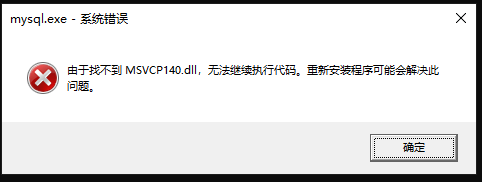
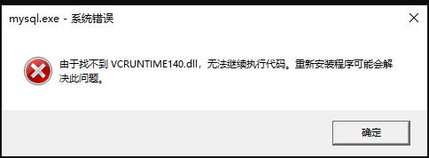
下载并安装
Visual C ++ Redistributable Package 2015,官方下载地址： https://www.microsoft.com/zh-CN/download/details.aspx?id=48145根据自己的系统版本下载对应版本的软件并安装即可
- 再输入
mysqld --install安装MySQL服务 - 然后再输入
net start mysql,启动mysql服务；对应的关闭命令为net stop mysql

- 再输入
MySQL8.0修改密码
- 打开一个DOS窗口(cmd)或者PowerShell
输入
mysql -u root -p，回车后会提示你输入密码，密码就是上面初始化生成的，如果你忘记了初始密码或者手贱直接关掉了，请删掉你在my.ini中datadir（数据存储位置）选项的目录重头进行步骤4！
之后输入
ALTER USER 'root'@'localhost' IDENTIFIED WITH mysql_native_password BY '新密码';注意修改你的新密码要用单引号括起来输入
flush privileges;刷新保存exit;或quit;退出mysql
注意图中红圈地方为新密码，请自行修改

至此密码就修改完成了
MySQL8.0修改root用户远程访问权限
注意8.0的开放方式与5.7的命令不同
如果你想在你自己电脑上连接你服务器上的MySQL数据库可能会无法连接
当然我这里不建议外网可以访问root用户
原因1：首先你的服务器需要开放你设置的MySQL数据库端口
原因2：root用户未开放远程访问权限
解决方法：
- 打开DOS窗口(cmd)或者PowerShell
- 输入
mysql -uroot -p按回车，输入密码，回车 - 输入
use mysql;切换到名为mysql的数据库下 - 输入
update user set host = "%" where user = "root"; - 输入
flush privileges;刷新权限 exit;或quit;退出mysql

之后你就有权限访问你服务器里的数据库了
MySQL8.0连接访问问题
远程访问数据库的可视化工具比较多如：Navicat、SQLyog、MySQL workbench 等，我这里使用 Navicat
输入MySQL服务器地址、用户名和密码，报2059错误，这是因为 MySql8.0 版本 和 5.x 的加密规则不一样，而现在仍有少部分可视化工具仍然只支持旧的加密方式，可能有插件连接时也会报2059的错误
我们在安装的时候，如果你使用了我上方贴出的my.ini作为模板修改就应该不会出现此问题，但也不排除仍有极少部分用户仍然无法连接，所以我们下方给出解决方法
这里我们可以直接修改加密规则
- 打开DOS窗口(cmd)或者PowerShell
- 输入
mysql -uroot -p按回车，输入密码，回车 - 输入
use mysql;切换到名为mysql的数据库下 - 输入
ALTER USER 'root'@'localhost' IDENTIFIED BY '你当前的root用户密码' PASSWORD EXPIRE NEVER; - 输入
ALTER USER 'root'@'%' IDENTIFIED WITH mysql_native_password BY '输入新的root用户密码';当然也可以选择直接输入你原来的密码 - 输入
flush privileges;刷新权限 exit;或quit;退出mysql